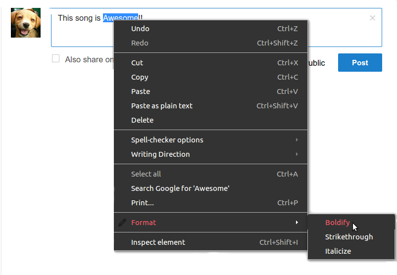

Format detects markdown tags that websites have integrated into their input forms.
If you visit a website that is registered in the Format database, shortcuts for the available formatting tags will automatically populate the Format sub-menu found in your context menu items.

As Format grows in popularity and users like YOU make suggestions, the database will continue to grow to everyones benefit.
Below, you will find a list of the currently recognized websites and their tags. You aren't stuck to these defaults though. You can add websites and edit the existing entries at your whim. It's your extension after all!